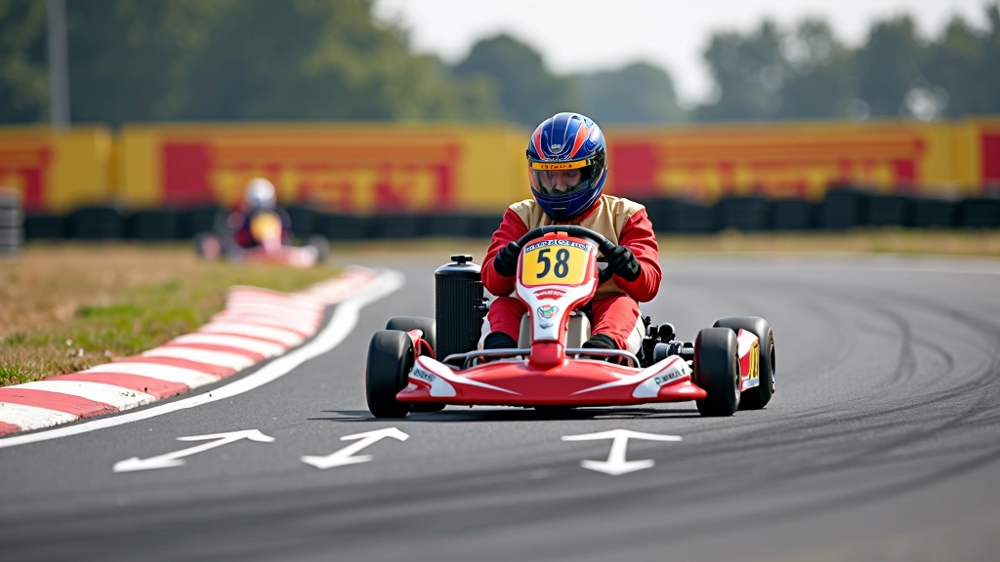
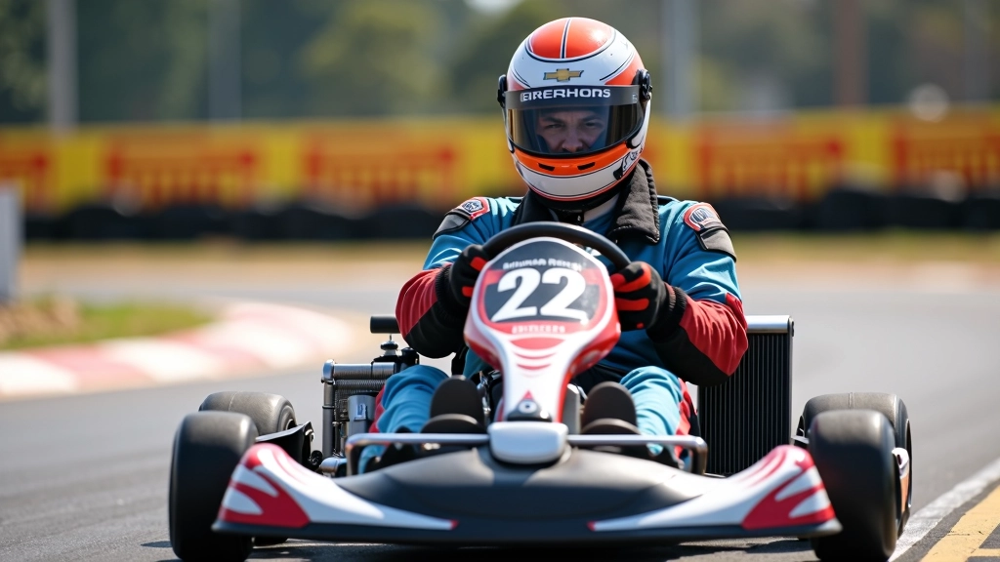
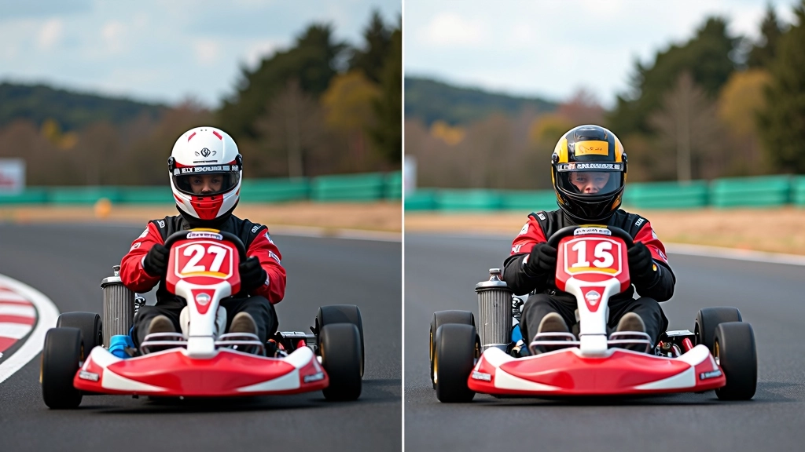
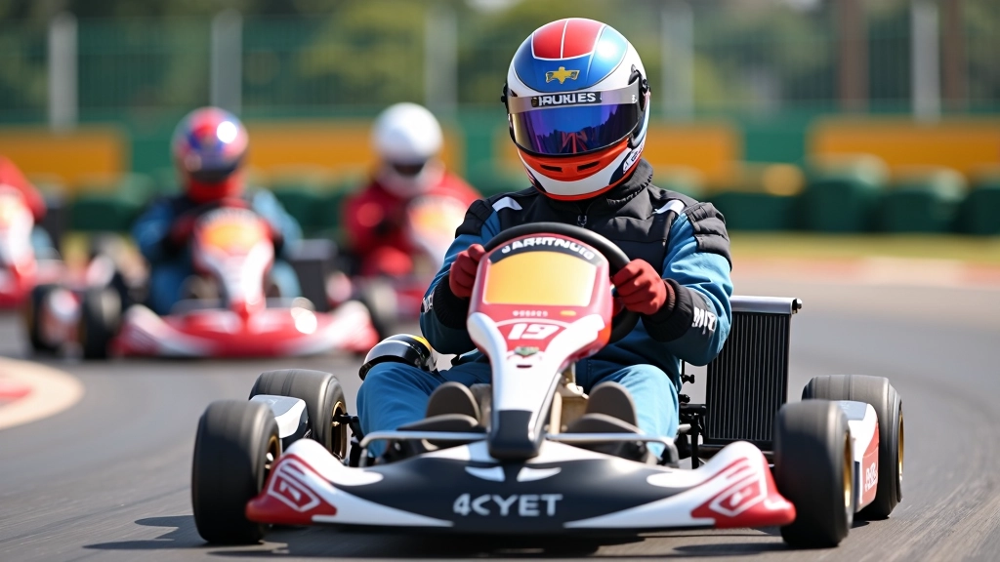

كيفية إيجاد نقطة الأبكس الصحيحة في المنحنيات
الأبكس ليس مجرد نقطة عشوائية. شرح عملي لكيفية اختيار الخط الأمثل الذي يسمح لك بأسرع انتقال عبر المنحنى.
الخروج من المنحنى بشكل صحيح هو ما يفرق بين الفائز والخاسر. تعلم كيفية تطبيق التسارع بذكاء وزيادة سرعتك بأمان.


فريق التحرير والمراجعة
يُعدّ هذا المحتوى من قِبل فريق أبكس رايد التحريري، المتخصص في تقديم إرشادات عملية وسهلة الفهم حول تحسين أداء السباق.
يعتقد الكثيرون أن دخول المنحنى هو الأهم. لكن الحقيقة مختلفة تماماً. الخروج من المنحنى بقوة واتزان هو ما يحدد نتيجة السباق فعلياً. عندما تخرج من منحنى بتسارع أفضل من منافسك، فأنت تكسب السرعة على كل جزء من المسار.
ستتعلم هنا كيف تطبق التسارع بشكل منطقي. ليس مجرد الضغط على الدواسة بقوة — بل فهم متى تبدأ، كيف تتدرج، وأين تصل إلى السرعة القصوى.
الخروج من المنحنى يحتاج إلى توازن بين السرعة والتحكم. أنت تريد أقصى تسارع لكن دون فقدان السيطرة على السيارة.
التسارع ليس حدثاً واحداً — إنه عملية متدرجة. تبدأ من قاع المنحنى (أقل نقطة سرعة) وتزيد التسارع تدريجياً حتى تصل إلى الخط المستقيم التالي.


الكثير من السائقين يبدأون التسارع مبكراً جداً أو متأخراً جداً. البداية المبكرة تعني فقدان التحكم. البداية المتأخرة تعني خسارة السرعة.
القاعدة البسيطة: ابدأ التسارع عندما تشعر أن السيارة قد انتهت من "التحول" داخل المنحنى. هذا حوالي 30-40% من طول المنحنى.
على حلبة القطامية مثلاً، المنحنيات الرئيسية تستغرق حوالي 3-4 ثوانٍ للمرور من خلالها. تبدأ التسارع في الثانية الثانية أو الثانية والنصف، لا في البداية مباشرة.
مقالات أخرى تحسّن فهمك لخط السباق الأمثل
الأبكس ليس مجرد نقطة عشوائية. شرح عملي لكيفية اختيار الخط الأمثل الذي يسمح لك بأسرع انتقال عبر المنحنى.

الكثير يكبحون في الوقت الخاطئ. هنا ستتعلم متى وأين تبدأ الكبح لتحقيق أفضل نتيجة عند الدخول.

الخط الأمثل يعتمد على إعدادات سيارتك. اكتشف كيف يؤثر توازن وضبط الإطارات على أدائك.
عندما تضغط على دواسة الوقود وأنت لا تزال في عمق المنحنى، تفقد الجر. الإطارات لا تستطيع التعامل مع التسارع والانعطاف في نفس الوقت. النتيجة؟ السيارة تنزلق للخارج وتفقد السرعة بدلاً من كسبها.
إذا انتظرت حتى تصل إلى الخط المستقيم تماماً قبل أن تبدأ التسارع، فستكون قد خسرت السرعة التي يمكنك كسبها. أنت تريد التسارع تدريجياً أثناء خروجك من المنحنى نفسه.
بعض السائقين يضغطون بقوة، ثم يرفعون، ثم يضغطون مرة أخرى. هذا يسبب اهتزازات وعدم استقرار. الضغط التدريجي والمستمر هو ما تريده — مثل رفع مستوى الصوت ببطء على جهاز التحكم.


الفهم النظري مهم، لكن التطبيق العملي هو ما يحسّن مهاراتك فعلياً. إليك خطة تدريب بسيطة:
ركز على المنحنيات البطيئة أولاً. لا تقلق من السرعة — اجعل تركيزك على بدء التسارع في الموقع الصحيح. كرر 20-30 مرة.
انتقل إلى المنحنيات المتوسطة. ركز على التدرج التدريجي للتسارع. أنت تريد منحنى ناعم على خط التسارع، لا قفزات مفاجئة.
ركب سرعتك الكاملة على جميع المنحنيات. الآن يمكنك الضغط بقوة أكبر والوصول إلى تسارع أعلى. لكن تذكر: التدريج والتحكم يأتيان أولاً.
التسارع الأمثل عند خروجك من المنحنى يعتمد على ثلاثة عوامل أساسية: التوقيت الصحيح، التدرج التدريجي، والتحكم الكامل بالسيارة. ليس عن الضغط بقوة أقصى — إنه عن الذكاء والتناسق.
ستلاحظ الفرق من جلستك الأولى. كل ميلي ثانية تحفظها في الخروج من المنحنى تترجم إلى فارق زمني ملموس على المسار بأكمله. هذا هو ما يفصل بين السباق الجيد والسباق الرائع.
هل تريد تحسين مهاراتك أكثر؟ اكتشف الدروس الأخرى في نفس الفئة.
استكشف جميع دروس خط السباقالمعلومات المقدمة في هذا المقال هي لأغراض تعليمية وإعلامية فقط. تقنيات السباق تختلف باختلاف نوع السيارة، حالة المسار، والظروف الجوية. يُنصح بشدة بالتدرب تحت إشراف مدرب محترف قبل تطبيق أي من هذه التقنيات على مسار حقيقي. أبكس رايد لا تتحمل مسؤولية أي إصابات أو حوادث قد تنجم عن تطبيق هذه المعلومات بدون إشراف متخصص.